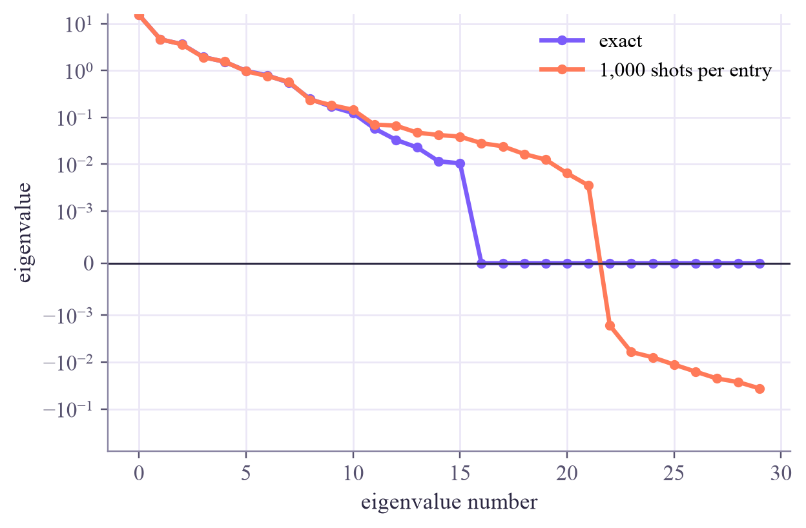

K_train (30, 30) K_test (60, 30) circuits on hardware: 435 for K_train (diagonal = 1, symmetric) + 1800 for K_test
Quantum Machine Learning
 about 12 min
about 12 min qml-w2d2.ipynb
qml-w2d2.ipynb
Quantum kernel matrices in Qiskit
One circuit per pair of points, thousands of shots each: build the training and test matrices properly, count the bill, and repair what shot noise breaks.
In this lesson you will
- Build the training matrix (train × train) and the test matrix (test × train) correctly
- Count the cost: about circuits for training, for prediction, times shots
- See shot noise produce negative eigenvalues, and repair the matrix by clipping them
Warm-up
1 minA kernel, on a budget

Yesterday the simulator handed us the whole kernel matrix at once. A real quantum computer hands out one probability at a time, each a fraction of shots. For 100 training points that's about 5,000 separate circuits before the SVM learns anything. Let's do it properly, and see what the noise does.
Big idea
4 minTwo matrices, one bill
Two matrices. Training needs , every training point against every training point (). Prediction needs , every test point against every training point (): the SVM's decision is a weighted sum over its support vectors, which are training points. (Mixing these up is the most common bug in quantum-kernel code.)
The bill. The diagonal is exactly 1 and the training matrix is symmetric, so training needs circuits; prediction needs more. With 1,000 shots each, 100 training and 50 test points cost about ten million shots. On a simulator we cheat: one statevector per point, then all overlaps at once.
The noise. Each entry is estimated with a wobble of about for shots. Here is a subtle consequence: a two-qubit feature map gives density matrices with only 16 numbers, so the exact kernel matrix has at most 16 nonzero eigenvalues; the rest are exactly zero. Noise nudges those zeros both ways, and the negative eigenvalues mean the estimated matrix is no longer a valid kernel.
The repair. Diagonalize, clip the negative eigenvalues to zero, and rebuild: the closest valid kernel matrix. On small, well-scaled problems the SVM barely notices the noise; Thursday shows where that breaks.
Train on train-versus-train, predict with test-versus-train, pay for every pair in shots, and clip the negative eigenvalues that shot noise creates.
Play
4 minA matrix from shots
24 two-moons points, ZZ feature map. Pick a shot budget per entry and watch the matrix and its eigenvalues.
Try this
Start exact: no red bars, and only about 16 tall ones. Then 10 shots: the matrix gets grainy and red bars appear. Press Measure again at 10,000 shots: a few tiny red bars remain, however many shots you take.
Code
2 minKernel matrices in Qiskit
The notebook for this lessonEvery code cell below, with what it printed, is in
qml-w2d2.ipynb. To change the code and run it yourself, open the notebook in Google Colab (free, in your browser) or download it for your own Jupyter.import numpy as np
import matplotlib.pyplot as plt
from qiskit import QuantumCircuit
from qiskit.quantum_info import Statevector
from qiskit.primitives import StatevectorSampler
from sklearn.datasets import make_moons
from sklearn.preprocessing import MinMaxScaler
from sklearn.model_selection import train_test_split
from sklearn.svm import SVC
X, y = make_moons(n_samples=90, noise=0.15, random_state=0)
X_train, X_test, y_train, y_test = train_test_split(X, y, test_size=60, random_state=0)
scaler = MinMaxScaler((0, np.pi / 2)).fit(X_train) # fit on the training points only
X_train, X_test = scaler.transform(X_train), scaler.transform(X_test)
def zz_map(x, reps=2):
qc = QuantumCircuit(2)
for _ in range(reps):
qc.h([0, 1])
qc.p(2 * x[0], 0)
qc.p(2 * x[1], 1)
qc.cx(0, 1)
qc.p(2 * (np.pi - x[0]) * (np.pi - x[1]), 1)
qc.cx(0, 1)
return qc
def statevectors(data):
return np.array([Statevector(zz_map(x)).data for x in data])
S_train, S_test = statevectors(X_train), statevectors(X_test)
K_train = np.abs(S_train.conj() @ S_train.T) ** 2 # 30 x 30: training against training
K_test = np.abs(S_test.conj() @ S_train.T) ** 2 # 60 x 30: test against TRAINING points
print("K_train", K_train.shape, " K_test", K_test.shape)
n, m = len(X_train), len(X_test)
print(f"circuits on hardware: {n * (n - 1) // 2} for K_train (diagonal = 1, symmetric) + {m * n} for K_test")What it printed in the notebook
pairs = [(i, j) for i in range(n) for j in range(i + 1, n)]
circuits = []
for i, j in pairs:
qc = zz_map(X_train[i]).compose(zz_map(X_train[j]).inverse())
qc.measure_all()
circuits.append(qc)
results = StatevectorSampler(seed=1).run(circuits, shots=1000).result()
K_shots = np.eye(n)
for (i, j), result in zip(pairs, results):
K_shots[i, j] = K_shots[j, i] = result.data.meas.get_counts().get("00", 0) / 1000
print(f"largest error of any entry: {np.abs(K_shots - K_train).max():.3f}")
eig_exact = np.linalg.eigvalsh(K_train)
eig_shots = np.linalg.eigvalsh(K_shots)
print(f"smallest eigenvalue: exact {eig_exact.min():.1e}, from shots {eig_shots.min():.3f}")
print(f"negative eigenvalues: exact {np.sum(eig_exact < -1e-9)}, from shots {np.sum(eig_shots < -1e-9)}")
plt.plot(np.sort(eig_exact)[::-1], "o-", ms=4, color="#7b5cfa", label="exact")
plt.plot(np.sort(eig_shots)[::-1], "o-", ms=4, color="#ff7a59", label="1,000 shots per entry")
plt.axhline(0, color="#2c2842", lw=1)
plt.yscale("symlog", linthresh=1e-3)
plt.xlabel("eigenvalue number")
plt.ylabel("eigenvalue")
plt.legend()
plt.show()What it printed in the notebook
largest error of any entry: 0.020 smallest eigenvalue: exact -9.1e-16, from shots -0.036 negative eigenvalues: exact 0, from shots 8

def clip_to_psd(K):
values, vectors = np.linalg.eigh(K)
return (vectors * np.clip(values, 0, None)) @ vectors.T
K_fixed = clip_to_psd(K_shots)
print("negative eigenvalues after the repair:", np.sum(np.linalg.eigvalsh(K_fixed) < -1e-9))
for name, K in [("exact", K_train), ("from shots", K_shots), ("from shots, repaired", K_fixed)]:
model = SVC(kernel="precomputed").fit(K, y_train)
print(f"{name:22s} test accuracy {model.score(K_test, y_test):.3f}")What it printed in the notebook
negative eigenvalues after the repair: 0 exact test accuracy 0.800 from shots test accuracy 0.800 from shots, repaired test accuracy 0.800
Your turn
2 minYour turn: how many shots does the SVM need?
Simulate shot noise for five budgets, repair the training matrix, and record the test accuracy. Where does it stop improving?
rng = np.random.default_rng(0)
def noisy(K, shots, symmetric):
E = rng.binomial(shots, np.clip(K, 0, 1)) / shots
if symmetric:
E = np.triu(E, 1)
E = E + E.T
np.fill_diagonal(E, 1.0)
return E
for shots in [10, 30, 100, 1000, 10000]:
accuracies = []
for repetition in range(10):
pass # TODO: noisy training and test matrices, repair the training one, fit SVC, append the test accuracy
print(shots, np.mean(accuracies) if accuracies else None)Need a hint?
Inside the loop: K_tr = clip_to_psd(noisy(K_train, shots, True)), K_te = noisy(K_test, shots, False), then fit SVC(kernel="precomputed") on K_tr and score on K_te.
Show a solution
rng = np.random.default_rng(0)
for shots in [10, 30, 100, 1000, 10000]:
accuracies = []
for repetition in range(10):
K_tr = clip_to_psd(noisy(K_train, shots, True))
K_te = noisy(K_test, shots, False)
accuracies.append(SVC(kernel="precomputed").fit(K_tr, y_train).score(K_te, y_test))
print(f"{shots:6d} shots per entry: test accuracy {np.mean(accuracies):.3f}")
print("On this small, well-scaled problem the SVM barely notices the shot noise: kernel values are large")
print("and well separated. Thursday shows where that breaks: when every kernel value becomes tiny.")What it printed in the notebook
10 shots per entry: test accuracy 0.788
30 shots per entry: test accuracy 0.787
100 shots per entry: test accuracy 0.793
1000 shots per entry: test accuracy 0.798
10000 shots per entry: test accuracy 0.800
On this small, well-scaled problem the SVM barely notices the shot noise: kernel values are large
and well separated. Thursday shows where that breaks: when every kernel value becomes tiny.Check yourself
1 minQuick check
Question 1 of 3
To predict 50 test points with an SVM trained on 100 points, which kernel values do you need?
Question 2 of 3
How many circuits does a 100-point training matrix need on hardware?
Question 3 of 3
An estimated kernel matrix has a few small negative eigenvalues. What do you do?
Wrap-up
1 minToday in one sentence
Research link
The quadratic cost in the number of training points is a serious obstacle for big datasets, even before noise. Research looks at ways around it: training on fewer, well-chosen points, or using the quantum computer only for some features.
Go deeper (optional)
Hubregtsen and coauthors, "Training quantum embedding kernels on near-term quantum computers" (Physical Review A, 2022), discuss shot noise, matrix repair and mitigation for quantum kernels in detail.
Next in Quantum ML: the quantum SVM, done properly from start to finish.

That's the lesson!
Tap the button to save it. Short and steady wins.
Marked by mistake? Undo